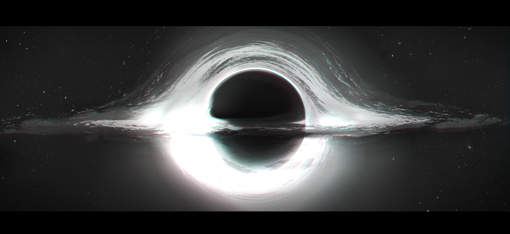

世界观：深渊
#虫族 #ABO #私设 #oc

深渊还细分为虚渊、幻渊、骸渊、深渊，和终渊。
宇宙深渊也按照深度细分为虚渊、幻渊、骸渊、深渊、终渊。
人类目前只能观测到虚渊的入口，还不具备靠近或是进入的能力。
按推测，终渊富含巨大的能量，人类将他成为“奇点”。
奇点无时无刻都在孕育新生命，里面的生命互相厮杀吞噬，因此强大的个体会生存到最后，因此越是深处的生命种类是越不稳定的。而有些个体也会往外迁徙，形成固定切庞大的种群。
因此深渊的定律就是越深处（深渊）的生命越是强大，但每种数量都极少；越往外（虚渊）的生命越弱，但有固定的族群，生活方式更加稳定。
终渊本身可能没有生命停留，即便也可能只有个数。
据说虫族也是诞生与深渊的生命，但后来逐渐迁徙至深渊外。
深渊生命的强度是无法计算的，即便只是虚渊的菜逼巴蝼蚁都可以团灭人类最精锐的部队。
帕瓦拉在虚渊的地位相当于人类世界的老鼠，吃蝼蚁，却被猫吃的中等地位。相比之下虫族应该算是大一点的老鼠，褐鼠和黑鼠的区别吧，能够互食的64开。
深渊生物
【奥丁】终渊
个体，非群体生物。
在曾经一段极度漫长岁月中称霸终渊的深渊之王，死后身体的大多被分食殆尽，剩下的部分残骸在广阔的宇宙中飘散，最终其中一块化作灭世的陨石降临旧地球。
【芬里尔】终渊
个体，非群体生物。
杀死曾经的深渊主宰——奥丁，并将其吞噬的终渊巨兽。
【虫族】幻渊
古老的虫族曾经是幻渊生物，但后续向外迁徙，后续完全脱离了深渊。
【帕瓦拉】虚渊
与虫族是互食关系，天天打个没完的，经常是虫族占上风一点。
平时除了打虫族，也会出渊在入口附近觅食，但还从未进入过人类的生存范围。
人类会被他侵蚀精神力。
【骰子】虚渊
虚渊的一种小型生物，与帕瓦拉是共生关系，一生中的大部分時間都附著在宿主身上，以宿主食物中的顆粒物為食。
本身很弱小，即便是人类也能杀死，但他们的精神力也会与虫族产生共鸣，有致幻兴奋效果。与骰子共生的帕瓦拉及击杀虫族的概率明显更高，但不知道是好是坏，因为致幻buff虫族容易越打越上头。